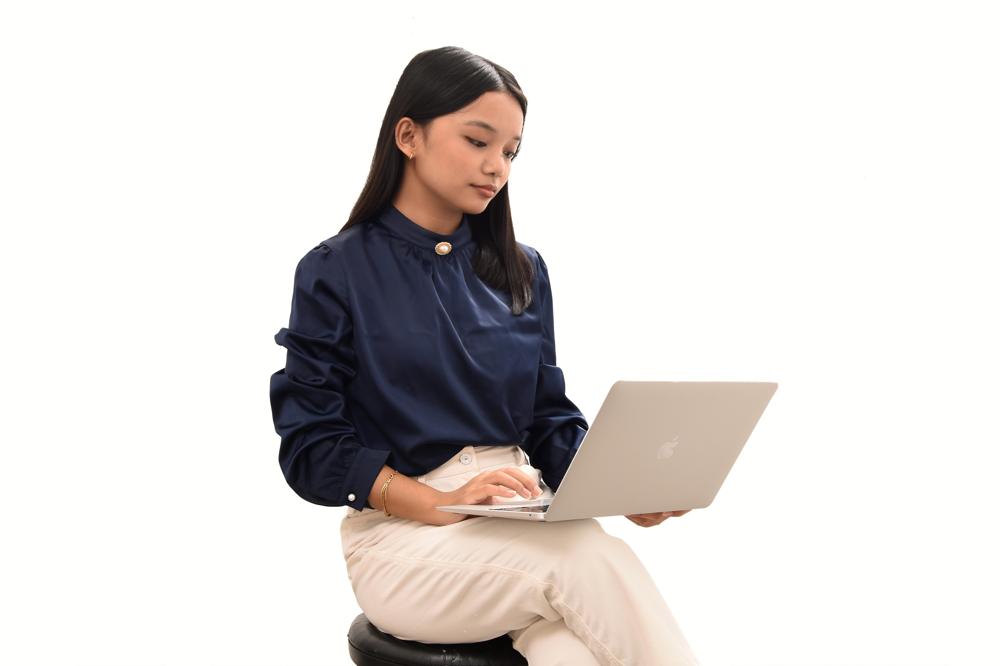
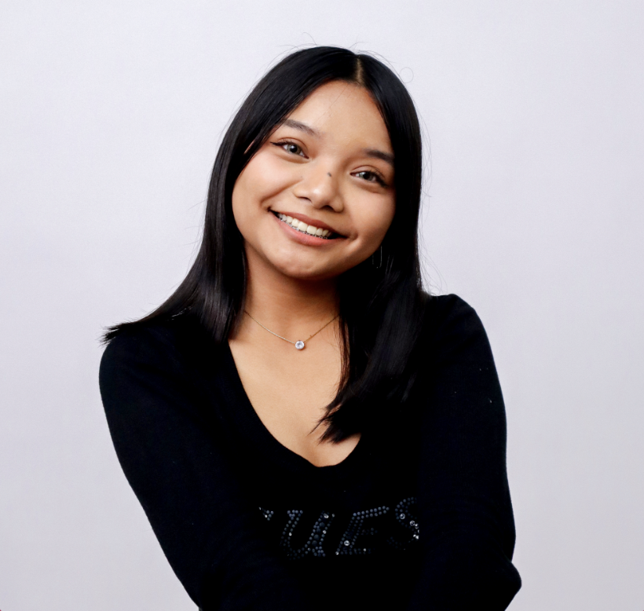

● 01 / PROFILE RECORDBIOGRAPHY · INTERESTSSHEMAIAH EZRA
01 / PERSONAL ARCHIVE
Designing with curiosity, building with care.
Personal introduction, background, interests, and creative journey.



Shemaiah Ezra Magpayo · BSIT
My journey into technology began through design.
I design and build clean, user-centered digital experiences that are functional, accessible, and visually engaging.
Currently exploring the intersection of design and development through UI/UX, frontend development, and creative digital projects.
I started exploring visual communication through publication materials, social media graphics, and youth media projects. Over the years, I worked on creative campaigns, branding materials, event publicity, and digital content for various organizations.
As I continued creating designs, I became increasingly curious about the systems and interfaces behind them. That curiosity eventually led me to pursue Information Technology and explore how meaningful digital experiences are designed and built.
Today, I combine my background in visual design with growing technical skills in UI/UX and frontend development, focusing on creating experiences that are both functional and visually engaging.
● 02 / JOURNEY2018 — PRESENT04 CHAPTERS
02 / PERSONAL ARCHIVE
From visual ideas to digital experiences.
A timeline of the design and technology path described in the original portfolio.
Started exploring graphic design and creative media.
Created publication materials, social media graphics, and visual campaigns.
Began my BSIT journey at Polytechnic University of the Philippines.
Exploring UI/UX design, frontend development, and user-centered digital experiences.
● ARCHIVE NOTESCREATIVE ORIGINPERSONAL NOTES
THE EARLY FILES
Small beginnings, lasting interests.
Personal captions from the earlier homepage, retained as part of the story.
Started with transitions, stayed for storytelling.
The pubmats got serious. One layout at a time, they turned into products.
Most of my hobbies became responsibilities. Fortunately, I still enjoy them.
● 03 / A PERSONAL NOTEFIRST HTML · GRADE 7A TURNING POINT
03 / PERSONAL ARCHIVE
A small school requirement became a direction.
A personal detail from the existing About & Experience record.
I never expected that learning basic HTML in Grade 7, something I initially saw as just another school requirement, would eventually become part of the path I chose in college.
Before discovering my passion for technology and design, I actually thought I would pursue a career in medicine. Looking back, that early exposure to web development became the first step toward the field I enjoy today.
● 04 / CONTACTDESIGN · WEB · CREATIVELET’S CONNECT
04 / PERSONAL ARCHIVE
Let’s build something meaningful.
Whether it’s a design project, a website, or a creative collaboration, I’d love to connect.